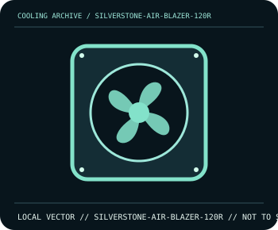

[ INDIVIDUAL COMPONENT // COOLING ]
SilverStone Air Blazer 120R
120 mm PWM fan with 5 V ARGB illumination and a maximum speed of 2200 rpm.

IDENTIFICATION: Confirm the complete model, revision, included mounting hardware, and host requirements against the manufacturer documentation before installation.
Manufacturer specifications
| Catalog subcategory | Case and radiator fans |
|---|---|
| Exact model | SilverStone Air Blazer 120R |
| Frame | 120 × 120 × 25 mm; model SST-AB120R-ARGB. |
| Speed and airflow | 600–2200 rpm; 25.62–93.97 CFM and 0.26–3.53 mm H₂O per manufacturer. |
| Electrical | 4-pin PWM fan (rated 0.32 A) plus 3-pin 5 V ARGB lighting (rated 0.26 A). |
| Compatibility | Standard 120 mm fan mount; motherboard/controller must provide separately compatible 12 V PWM and 5 V ARGB connections. |
Compatibility and installation
Connect the motor and lighting leads separately. Confirm 5 V ARGB pin orientation and do not connect its 3-pin plug to a 12 V four-pin RGB header; account for fan and LED current independently when using splitters.
- Disconnect system power before installation or rewiring, and follow the exact model manual.
- After assembly, confirm fan/pump operation and monitor temperatures before sustained workload.
Manufacturer source
- SilverStone — Air Blazer 120R specifications and manualManufacturer product documentation; check the current model revision, package contents, and local socket kit before purchase or installation.
This static catalog entry is an identification aid, not a compatibility guarantee; fit and ratings can vary by revision, mounting kit, and host configuration.